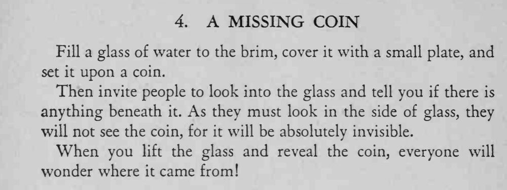

装满水的玻璃杯盖盘倒扣在硬币上，人从侧面看却怎么也看不见杯下的钱；杯子一拿开，硬币赫然在目。
水要满、盘子要平，观看角度必须从侧面。

Fill a glass of water to the brim, cover it with a small plate, and set it upon a coin. Then invite people to look into the glass and tell you if there is anything beneath it. As they must look in the side of glass, they will not see the coin, for it will be absolutely invisible. When you lift the glass and reveal the coin, everyone will wonder where it came from!